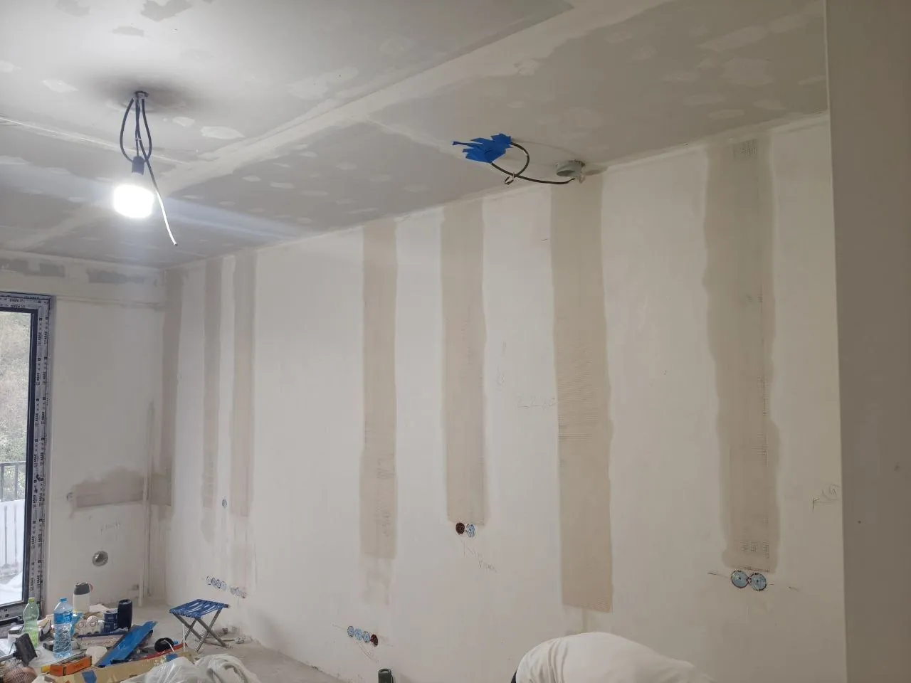
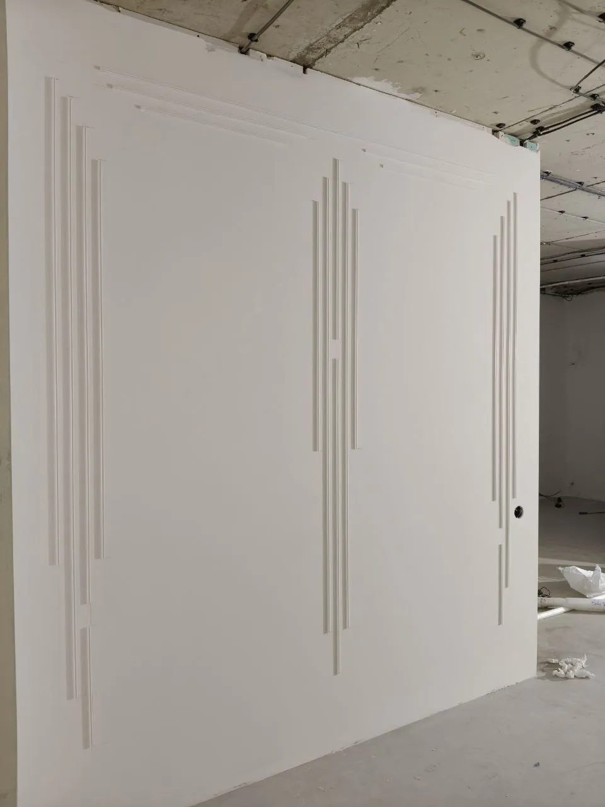
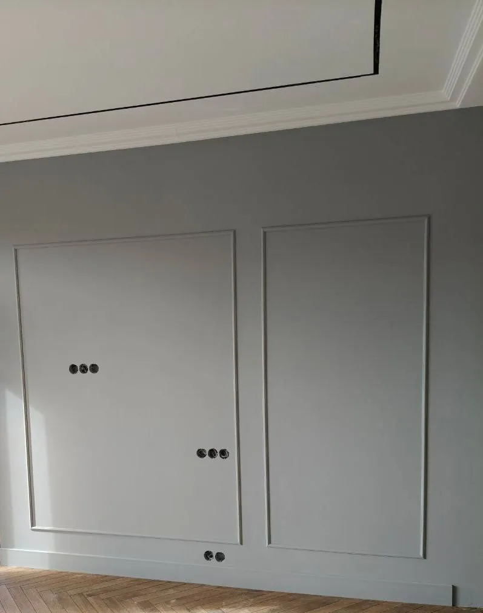
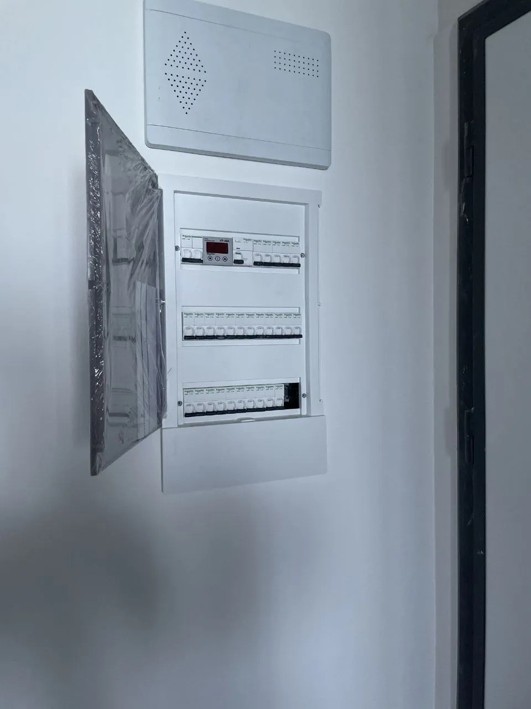

Покраска стен уровня Q4
Финишная шпатлёвка по всей площади и проверка каждой стены прожектором в косом свете перед покраской.
Реальные объекты MonteBuild: покраска стен разных уровней качества, декоративные покрытия и электромонтаж. Больше фото и видео процесса — в нашем Instagram.
Стены после электромонтажа: заделанные штробы с армирующей сеткой — и та же комната после подготовки и монтажа декоративных молдингов.


Финишная шпатлёвка по всей площади и проверка каждой стены прожектором в косом свете перед покраской.

Шёлковое покрытие с мягким перламутровым блеском в коридоре со скрытыми дверями и настенной подсветкой.

Подготовка стен с декоративными молдингами: шпатлёвка в 2–3 слоя, шлифовка, грунт и покраска.

Монтаж рамок из молдингов и покраска в серый цвет с аккуратными примыканиями к потолку и плинтусу.

Подготовка и покраска стен в квартире новостройки до установки натяжного потолка.

Разводка по квартире, сборка щита с автоматами по группам и реле напряжения, проверка всех линий.
Как сделать ремонт квартиры в Батуми или Тбилиси, не приезжая в Грузию: онлайн-смета, договор, ежедневные фото- и видеоотчёты, поэтапная оплата, приёмка. Пошаговый разбор от MonteBuild.
Опишите задачу — ответим в WhatsApp в течение 30 минут в рабочее время, договоримся о выезде и после замера пришлём смету.
Или сразу: +995 595 01 96 15